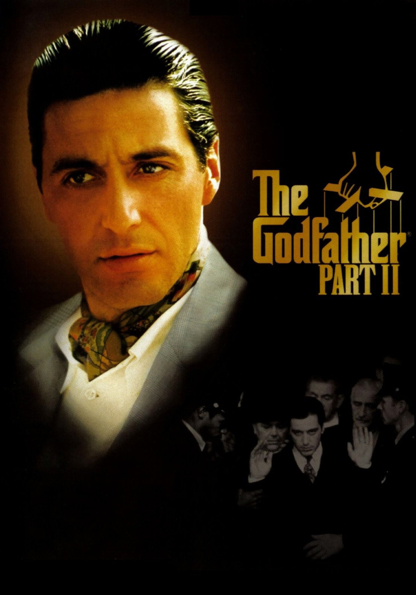

 The Godfather Part II (titulada El padrino: Parte II en España, México y Uruguay, y El padrino II en el resto de Hispanoamérica)4 es una película estadounidense de crimen y drama de 1974 dirigida por Francis Ford Coppola, que continúa la película El padrino, siendo la segunda parte de una trilogía. Es considerada como la mejor secuela de todos los tiempos y una de las pocas segundas partes que rivalizan con su antecesora. El escritor Mario Puzo repite como guionista al lado del director y esta vez adapta el tema de la infancia y madurez de Vito Corleone, mientras profundiza en los deberes de Michael como el nuevo patriarca de la familia.